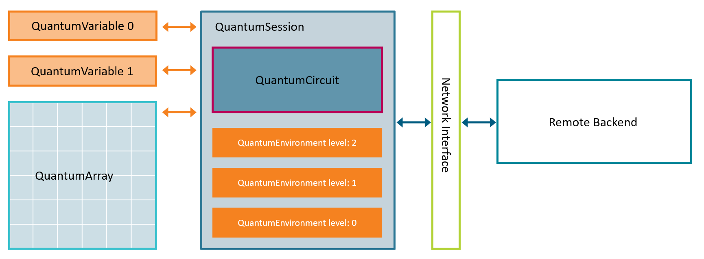

Qrisp 0.1#
The development of quantum algorithms with a potentially exponential speed advantage over classical algorithms has sparked widespread interest in business and science. Advances in hardware development in recent years have shown that this potential can be exploited. In fact, however, there is still a large gap between accessible and user-friendly programming, as known from classical computer science, and quantum programming, which often still leans towards experimentation. To overcome the above-mentioned gap, the step away from the assembler-like circuit structure towards a formulation by a higher programming language has to be taken. This problem has been aknowledged by the industry and some apporaches have been presented. Most notable are projects like Silq or Q# which allow programming on a high-level. Both however come with the disadvantage that there is no way of compiling written programms into an established quantum circuit representation (like OpenQASM), which is of course a critical feature for an application oriented software-stack.
The higher-level quantum programming language presented here is called Qrisp and achieves user-friendly yet performant compiling by automating many small-step- and complex elements. As a part of the Qompiler project funded by the German ministry for economical affairs, Qrisp comes with a network interface for adressing remote backends and will be connected to the hardware produced by Eleqtron yielding a fully German, self sufficient software-stack for developing and executing quantum solutions in an open-source environment. Towards the end of the Qompiler project, the developed network interface will be transferred into standardization activities.
With Qrisp, we aim to bridge several of the existing gaps and to create a framework with the following advantages:
A uniform high-level programming interface and abstraction and low-level backend interface for different hardware platforms.
A simple and expressive syntax but efficient circuits.
An accessible and flexible framework for creating and executing quantum algorithms on physical backends.
Qrisp is written in pure Python and the source code for Qrisp programs is also written in Python, giving developers direct access to the vast ecosystem of scientific and industrial libraries that Python has to offer. The framework’s outputs are circuit objects, which means that Qrisp programs can be run on many of today’s physical quantum backends and simulators.
Framework structure overview#
An overview over the frameworks structure can be found in the following diagram:
{kind=link}

The central user interface for quantum programming is the QuantumVariable. The lifetime cycle of QuantumVariables and other aspects are managed by the QuantumSession class. Each QuantumVariable is registered in exactly one QuantumSession. Due to a sophisticated system of merging QuantumSessions together when neccessary, in many cases the user does not have to think about QuantumSession objects and can just use QuantumVariables.
In many cases raw QuantumVariables are not that helpfull as they provide very few advanced dataprocessing capabilities due to their generality. QuantumVariables can be thought of as the abstract baseclass of more specific datatypes.
Qrisp provides 4 advanced quantum data types:
QuantumFloat, a datatype to represent and process numbers to arbitrary precision.
QuantumBool, a datatype to represent boolean values.
QuantumChar, a datatype to represent characters.
QuantumString, a datatype to represent strings.
QuantumVariables of the same type can be managed in a class called QuantumArray. This class is an inheritor of the numpy ndarray class and thus provides many convenient and established features like slicing or reshaping.
One of the unique features of Qrisp is the possibility to conveniently load classical data into the quantum computer using logic synthesis. This can be achieved using the QuantumDictionary class. This class can be treated like a regular Python dictionary up until the point where a QuantumVariable is used as a key. This will then return another QuantumVariable where the values are entangled with the values of the key QuantumVariable as dictated by the content of the dictionary.
Using the concept of QuantumEnvironments it is possible to programm using many of the established paradigms from classical computing such as conditional execution of blocks of code. This is described in ConditionEnvironment.
As most of todays research on quantum algorithms has been formulated in terms of quantum circuits, we provide the Circuit Manipulation module, which allows the construction of QuantumCircuits. Constructing QuantumCircuits in Qrisp is very similar as in Qiskit since the structure and the naming of the classes and methods are held as close as possible.
To guarantee application oriented algorithm development at every stage, Qrisp comes with a network interface for addressing remote backends. The way this works is that the backend provider runs a BackendServer on their infrastructure and the user connects via a BackendClient object. Note that these classes are only wrappers for an interface generated by state-of-the art interfacing technology. Furthemore, Qrisp supports running it’s circuits on the backends of established providers using the VirtualBackend class.
Conclusion#
With Qrisp we hope to open the creation of quantum algorithms to a much broader audience of developers than today. Even though a solid understanding of quantum mechanics and linear algebra is still neccessary, many of the tedious book-keeping tasks have been eliminated. Not only does this lower the entry barrier significantly but we also believe that this might open new levels of complexity in quantum algorithms, which might uncover previously unseen quantum advantages. Qrisp is available as an open-source codebase and open for contributions!